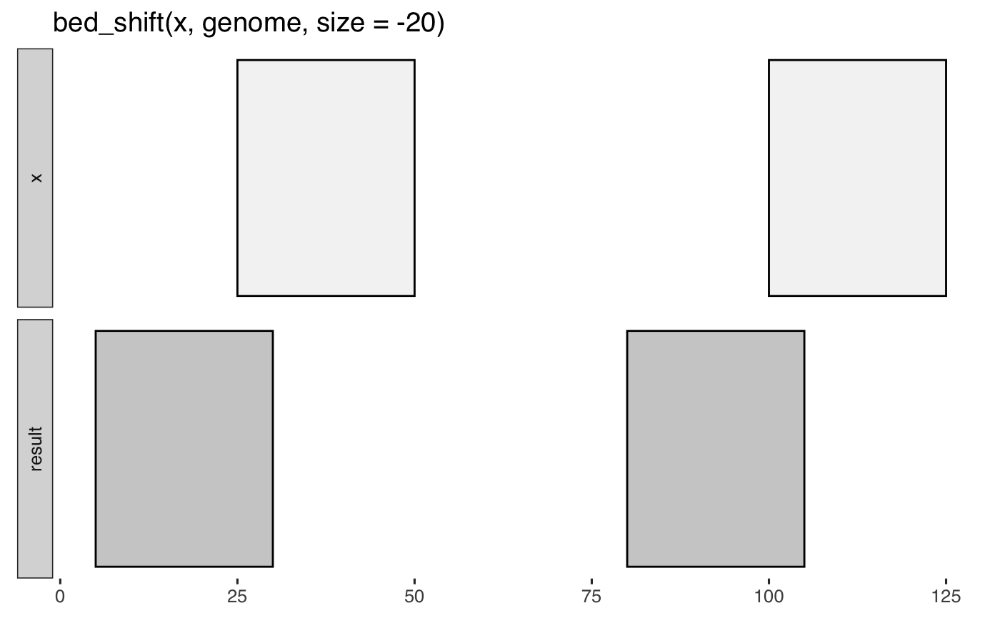

Out-of-bounds intervals are removed by default.
bed_shift(x, genome, size = 0, fraction = 0, trim = FALSE)
| x | |
|---|---|
| genome | |
| size | number of bases to shift. postive numbers shift right, negative shift left. |
| fraction | define |
| trim | adjust coordinates for out-of-bounds intervals |
http://bedtools.readthedocs.org/en/latest/content/tools/shift.html
Other single set operations:
bed_cluster(),
bed_complement(),
bed_flank(),
bed_merge(),
bed_partition(),
bed_slop()
x <- trbl_interval( ~chrom, ~start, ~end, 'chr1', 25, 50, 'chr1', 100, 125 ) genome <- trbl_genome( ~chrom, ~size, 'chr1', 125 ) bed_glyph(bed_shift(x, genome, size = -20))x <- trbl_interval( ~chrom, ~start, ~end, ~strand, "chr1", 100, 150, "+", "chr1", 200, 250, "+", "chr2", 300, 350, "+", "chr2", 400, 450, "-", "chr3", 500, 550, "-", "chr3", 600, 650, "-" ) genome <- trbl_genome( ~chrom, ~size, "chr1", 1000, "chr2", 2000, "chr3", 3000 ) bed_shift(x, genome, 100)#> # A tibble: 6 x 4 #> chrom start end strand #> <chr> <dbl> <dbl> <chr> #> 1 chr1 200 250 + #> 2 chr1 300 350 + #> 3 chr2 400 450 + #> 4 chr2 500 550 - #> 5 chr3 600 650 - #> 6 chr3 700 750 -bed_shift(x, genome, fraction = 0.5)#> # A tibble: 6 x 4 #> chrom start end strand #> <chr> <dbl> <dbl> <chr> #> 1 chr1 125 175 + #> 2 chr1 225 275 + #> 3 chr2 325 375 + #> 4 chr2 425 475 - #> 5 chr3 525 575 - #> 6 chr3 625 675 -# shift with respect to strand stranded <- dplyr::group_by(x, strand) bed_shift(stranded, genome, 100)#> # A tibble: 6 x 4 #> chrom start end strand #> <chr> <dbl> <dbl> <chr> #> 1 chr1 200 250 + #> 2 chr1 300 350 + #> 3 chr2 400 450 + #> 4 chr2 300 350 - #> 5 chr3 400 450 - #> 6 chr3 500 550 -